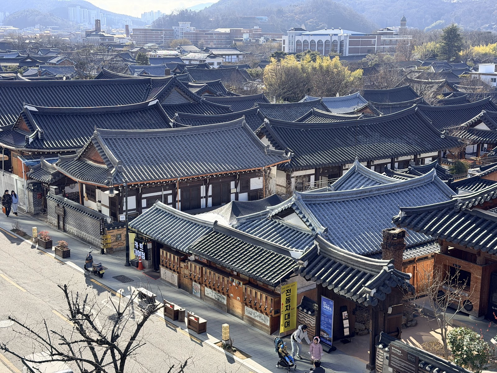

How to Explore Jeonju Hanok Village: A Practical Guide to Korea’s Traditional Streets
At a glance
- Where: 99 Girin-daero, Wansan-gu, Jeonju, Jeonbuk State
- What to expect: A walkable historic neighborhood of traditional Korean houses, shops, food spots and nearby cultural landmarks.
- Google rating: 4.1/5 from 29,275 reviews, according to the supplied current listing information.
- Best approach: Give yourself time to wander, and be considerate: people live in parts of the village.
Jeonju Hanok Village is one of the city’s best-known places to experience traditional Korean architecture and everyday local culture in the same visit. Its lanes are lined with hanok—traditional Korean houses with tiled roofs, timber details and enclosed courtyards—alongside cafés, small shops and places to eat. The appeal is not just one landmark or photo spot: it is the chance to explore a historic neighborhood on foot and notice how old and newer uses sit side by side.
For first-time visitors to Korea, the village makes a rewarding day out and an easy introduction to Jeonju’s cultural character. It can also be busy, particularly around popular streets and photo locations. A little flexibility helps: let yourself take quieter side lanes when the main paths feel crowded, and leave room in your plans for stops that catch your eye.
What makes the village worth visiting
Hanok Village is a real neighborhood as well as a visitor destination. That mix gives the area much of its atmosphere: carefully preserved traditional buildings share the streets with businesses serving residents and travelers. Look up at the rooflines, notice the variety of gates and wooden details, and take time to appreciate the changing views from one lane to the next. Some buildings are private homes, so avoid entering courtyards or photographing people and living spaces without permission.
The village is also well placed for visiting nearby sights. Gyeonggijeon Shrine, associated with the royal history of the Joseon dynasty, and Jeondong Cathedral are among the landmarks in the surrounding area. Omokdae is another point of interest nearby. Rather than trying to see everything at speed, choose a few places that interest you and enjoy the walk between them. Check on-site information for any separate access requirements or current visitor arrangements.
How to plan your walk
Start by orienting yourself on the main streets, then branch into smaller lanes as your interests suggest. The busiest stretches are useful for getting a first impression of the village, while quieter corners can offer a more relaxed look at its buildings and details. Keep your map handy, but do not be afraid to wander at an easy pace; the pleasure of the visit is often in the small discoveries between major sights.
Allow more time than you would for a quick photo stop. You may want to pause for a meal, browse local shops or spend time at a nearby cultural site. If you are visiting with children, older travelers or anyone who prefers a gentler pace, plan breaks rather than trying to cover every lane in one go. Surfaces and pedestrian conditions can vary, so comfortable shoes are a sensible choice. Visitors who need step-free access should check their intended route in advance.
Food, shopping and local etiquette
Jeonju is strongly associated with Korean food, and the village area offers opportunities to eat while exploring. Treat the village as a place to discover what is available on the day rather than relying on a particular shop or dish being open. If you have dietary restrictions, allergies or questions about ingredients, ask before ordering; not every establishment will have detailed information in English.
As you browse, remember that this is not a museum set. Keep voices considerate in residential lanes, do not block narrow paths for photos, and follow any signs asking visitors to stay out of certain areas. Ask before taking close-up photographs of shopkeepers or residents. These small courtesies help preserve the neighborhood’s welcoming character for people who live and work there.
Good to know
- Expect crowds: Popular streets and photo locations may be busy. A quieter side lane can make a welcome change.
- Wear comfortable shoes: Exploring is mostly about walking, and the conditions underfoot can vary.
- Check details on the day: Individual businesses and nearby attractions may have their own schedules, rules or access arrangements. Confirm these directly rather than assuming they are the same across the village.
- Be respectful: Some traditional houses are occupied homes. Follow signs, respect privacy and leave entrances clear.
- Use the map pin: The listed address can help you locate the village, but the area itself is best explored on foot once you arrive.
Useful links
- Jeonju Hanok Village on Google Maps
- Official website: No official website was provided for this listing.
FAQ
Is Jeonju Hanok Village a good place for a first visit to Jeonju?
Yes. It brings together traditional architecture, places to eat and several nearby cultural sights, making it a useful area to explore on foot. It is also a busy visitor destination, so allow time to wander at your own pace.
Can I visit the village without joining a tour?
The neighborhood can be explored independently. Use the map to orient yourself, follow local signs and check directly with any individual attraction or business for its current visitor information.
Are the hanok houses open to visitors?
Not all of them. Some are private homes, while others may be businesses or visitor sites. Follow posted signs and do not enter private courtyards or buildings unless access is clearly invited.